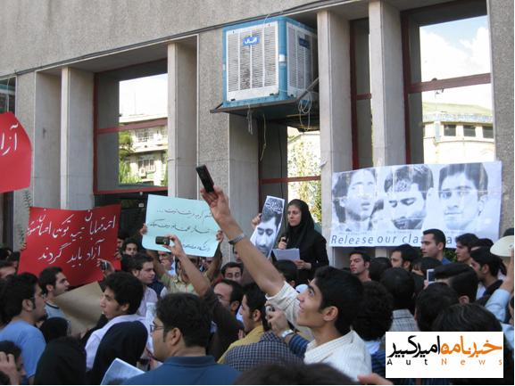

تریبون آزاد دانشجویی «ستاره ها در اوین» در اعتراض به صدور احکام ناعادلانه و سنگین چندین سال حبس برای سه دانشجوی در بند دانشگاه امیرکبیر امروز، ۳۰ مهرماه ۸۶، در این دانشگاه با حضور جمع کثیری از دانشجویان دانشگاه های تهران برگزار شد.

به گزارش خبرنامه امیرکبیر مدیریت دانشگاه از روز گذشته با ممنوع الورود کردن ناگهانی همه اعضای شورای مرکزی انجمن اسلامی امیرکبیر و همچنین جمع کثیری از فعالین دانشجویی دانشگاه و همچنین فراخواندن کلیه نیروهای انتظامات دانشگاه سعی در جلوگیری از برگزاری این تریبون نمود.
کمیته انضباطی دانشگاه امیرکبیر به دستور دکتر رهایی روز گذشته ضمن تماس با خانواده کلیه فعالین دانشجویی از آن ها خواست از حضور فرزنداشان در تریبون آزاد امروز جلوگیری کنند. کمیته انضباطی خانواده دانشجویان را تهدید کرده بود در صورت حضور دانشجویان در این تجمع علاوه بر صدور حکم محرومیت از تحصیل برای ایشان، نیروهای امنیتی هم آن ها را دستگیر خواهند کرد.
انتظامات دانشگاه امیرکبیر همچنین به منظور کنترل بهتر ورود دانشجویان به دانشگاه از صبح امروز دو درب اصلی دانشگاه، درب ولیعصر و درب خیابان سعید، را مسدود کرده و ورود دانشجویان تنها از درب حافظ و درب خیابان رشت امکان پذیر بود.
گزارش های رسیده حاکی از آن است بعضی از اعضای شورای مرکزی دفتر تحکیم وحدت و انجمن اسلامی امیرکبیر صبح امروز با درگیری شدید با نیروهای انتظامات دانشگاه توانستند وارد دانشگاه شوند. نیروهای انتظامات دانشگاه با ضرب و شتم محمداسماعیل سلمانپور، آرمان صداقتی و نریمان مصطفوی مانع ورود آن ها به دانشگاه شد. بلافاصله پس از درگیری انتظامات با دانشجویان به درخواست مدیریت دانشگاه، نیروهای انتظامی از کلانتری میدان فلسطین مقابل درب های دانشگاه مستقر شدند.
تدابیر امنیتی اندیشیده شده توسط دکتر رهایی، رئیس دانشگاه امیرکبیر، جهت کنترل ورود دانشجویان به حدی بود که حتی عده ای از دانشجویان دانشگاه امیرکبیر که کارت دانشجویی همراه نداشتند نتوانستند امروز وارد دانشگاه شوند. همچنین حضور نیروهای امنیتی در داخل و خیابان های اطراف دانشگاه امیرکبیر بسیار چشمگیر بود.
به گزارش خبرنامه امیرکبیر با وجود تمام سنگ اندازی های مدیریت دانشگاه امیرکبیر ظهر امروز تریبون بزرگ «ستاره ها در اوین» با حضور جمع کثیری از دانشجویان دانشگاه امیرکبیر و همچنین دانشجویان دیگر دانشگاه های تهران ساعت یازده و سی دقیقه، از جلوی دانشکده پلیمر آغاز شد.
دانشجویان شرکت کننده در این تریبون ابتدا با خواندن سرود یار دبستانی و ای ایران، از مقابل دانشکده پلیمر به سمت صحن اصلی دانشگاه راهپیمایی کردند و با تجمع دانشجویان در صحن دانشگاه تریبون آزاد آغاز شد.
در این تریبون، که گزارش کامل آن متعاقبا ارسال می شود، امیرحسین ایرجی، عضو انجمن اسلامی دانشگاه علامه، و علی عبدی، عضو شورای مرکزی دانشگاه شریف، بیانیه های انجمن اسلامی دانشگاه علامه و شریف را در حمایت از سه دانشجوی در بند دانشگاه امیرکبیر را قرائت کردند.
ر ادامه مجید شیخ پور و سجاد ویس مرادی، دو عضو شورای مرکزی انجمن اسلامی امیرکبیر، اقدام به سخنرانی در این تریبون نمودند. و پس از آن یکی از دانشجویان دانشگاه علامه و خواجه نصیر سخنرانی کردند. علی عزیزی، علی وفقی و علی نیکونسبتی، از اعضای شورای مرکزی دفتر تحکیم وحدت، نیز در این تریبون سخنرانی کردند.
در پایان این تریبون پیام سه دانشجوی در بند، مجید توکلی، احمد قصابان و احسان منصوری که از زندان خطاب به دانشجویان تجمع کننده صادر کرده بودند قرائت شد. پس از اتمام تریبون دانشجویان در حالی که تصاویر سه دانشجوی در بند و پلاکاردهایی با مضامین «مرگ بر دیکتاتور» و «دانشجوی سیاسی آزاد باید گردد»، در دست داشتند به سمت درب ولیعصر راهپیمایی کردند. دانشجویان شعار می دادند: «رهایی حیا کن دانشگاه رو رها کن»، «رهایی برو گمشو»، «رئیس بی لیاقت استعفا استعفا»، «مرگ بر دیکتاتور»، «دانشجوی زندانی آزاد باید گردد»، «ایران شده فلسطین، مردم چرا نشستین» و…